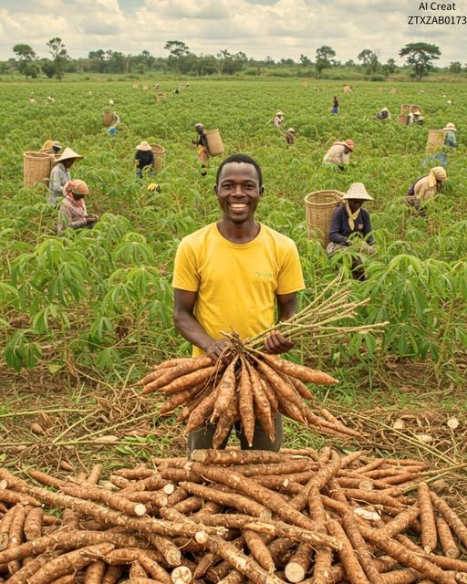
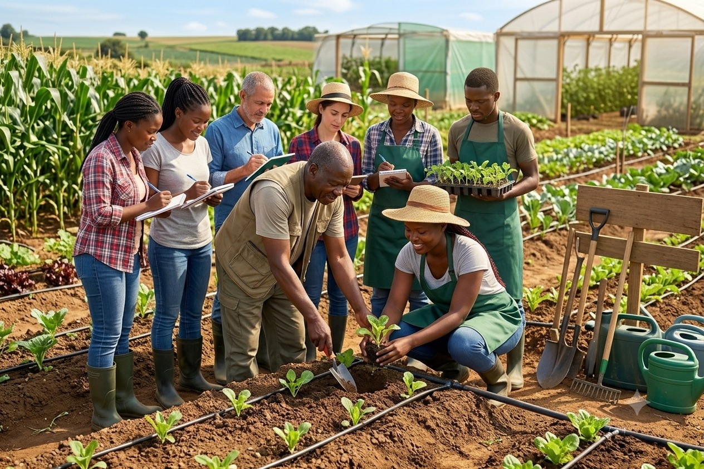
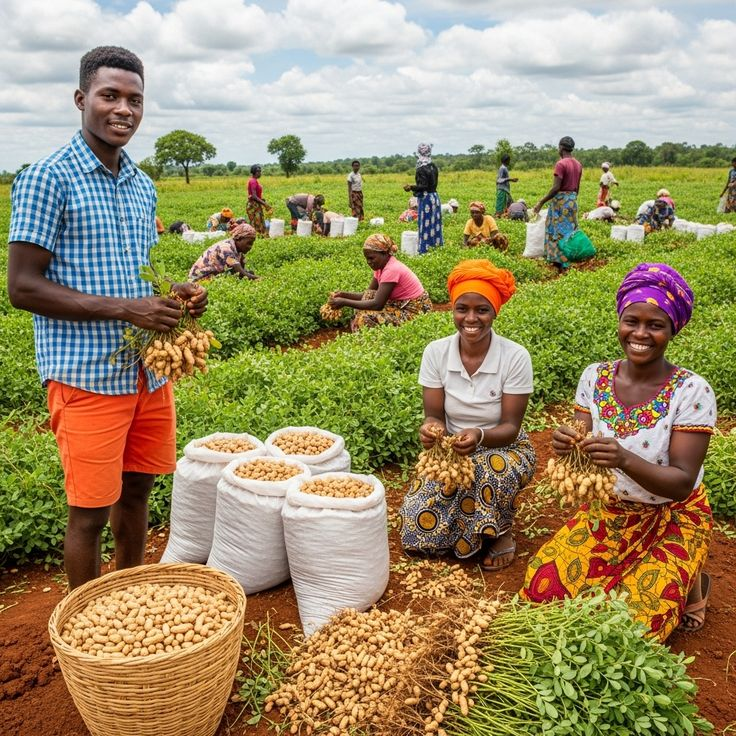

AGRI TOGO
"Ensemble, valorisons
les produits locaux"
Commandez maïs, maniocs, ananas et produits transformés, cultivés avec soin dans nos régions pour booster votre business.
Nos Chiffres Clés
500+
Membres actifs
2+
Régions occupées
100+
Produits Disponibles
Les dernières actualités

Transformation du manioc : les unités locales accélèrent
Les coopératives augmentent leur production de gari, de farine et de tapioca pour répondre à la demande croissante. Une belle dynamique pour valoriser les tubercules togolais.
Lire la suite →
Formation des agriculteurs aux techniques modernes
Irrigation, gestion des sols et nouvelles méthodes de culture : une formation pratique pour améliorer les rendements des producteurs de nos régions.
Lire la suite →
Début des récoltes d'arachide : une campagne prometteuse
Grâce à de bonnes conditions climatiques et au travail des communautés rurales, les coopératives annoncent une récolte abondante cette année.
Lire la suite →